Each population is fitted alone, at each of three hydrograph years of a cohort: the year its parents spawned, its age-0 year and its age-1 year. This table is first because pooling validated and unvalidated curves without saying so would be a synthesis of arithmetic.
| site | spawning year | age-0 year | age-1 year |
|---|---|---|---|
| Beaverhead.FishAndGame | -0.22 | +0.02 | +0.54 |
| Beaverhead.Hildreth | -0.15 | -0.08 | -0.01 |
| BigHole.HogBack | -0.03 | +0.16 | -0.03 |
| BigHole.Melrose | -0.24 | -0.00 * | +0.04 |
| Bighorn.Bighorn | +0.08 | -0.13 | -0.19 |
| Bighorn.MallardsLanding | -0.01 | -0.06 | -0.20 |
| Bitterroot.BellCrossing | -0.07 | +0.02 | -0.04 |
| Bitterroot.Darby | -0.01 | -0.02 | +0.03 |
| Blackfoot.Johnsrud | -0.06 | +0.19 | -0.07 |
| Blackfoot.ScottyBrown | -0.01 | -0.01 | -0.00 |
| Boulder.B2 | -0.23 | -0.12 | +0.04 |
| Madison.Norris | -0.02 * | -0.17 | -0.05 |
| Madison.PineButte | -0.07 | -0.16 | -0.08 |
| Missouri.Cascade | -0.07 | -0.14 | -0.20 |
| Missouri.Craig | -0.29 | -0.01 | -0.03 |
| RockCreek.FishAndGame | -0.10 | +0.00 | -0.01 |
| Ruby.Vigilante | -0.07 | -0.08 | -0.06 |
| Shields.ConvictGrade | -0.04 | -0.04 | -0.09 |
| Smith.EagleCreek | -0.24 | -0.06 | -0.09 |
| Yellowstone.CorwinSprings | +0.20 | +0.12 | -0.05 |
| Yellowstone.MillCreek | +0.33 | -0.09 | +0.03 |
spawning year: 2 of 21 populations pass; age-0 year: 1 of 21 populations pass; age-1 year: 1 of 21 populations pass.
A stage that fails at a site is a statement about how much that record can resolve, not a demonstration that flow does not matter at that stage. Counting passes understates a moderate effect that is real everywhere; section 2 is where the stages are compared.
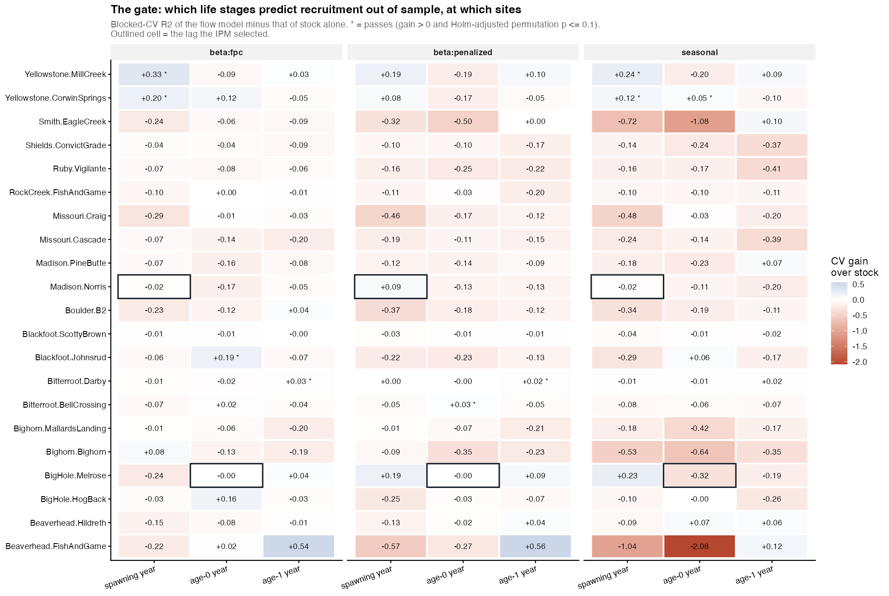
Two ceilings sit under every result above, and they call for different remedies. If much of the year-to-year variation in log(R/S) is the IPM being unsure, no flow model can explain it, and the remedy is better fish data. If the IPM is sure but the regression is not, the remedy is more years.
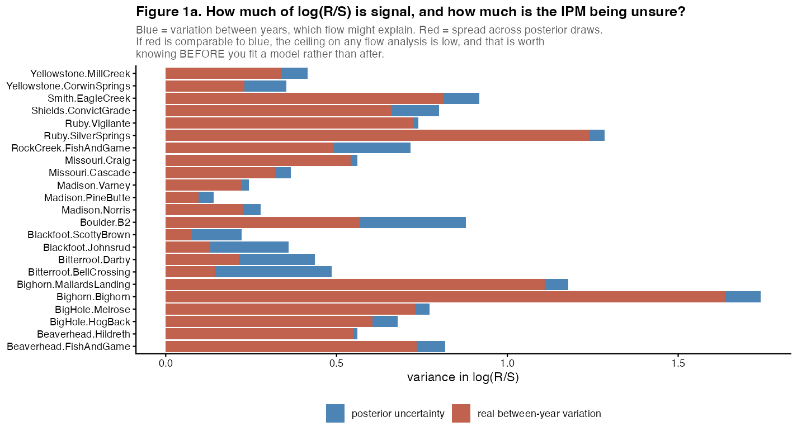
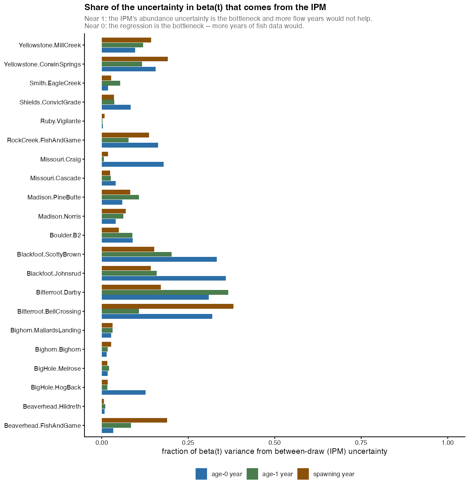
All populations pooled, all three stages fitted jointly, so each stage’s curve is conditional on the other two – the comparison the single-site fits cannot make. Two estimators, built on different assumptions: the flow modes shared by every river with a random slope per population (black), and one smooth curve across the whole life cycle (gold).
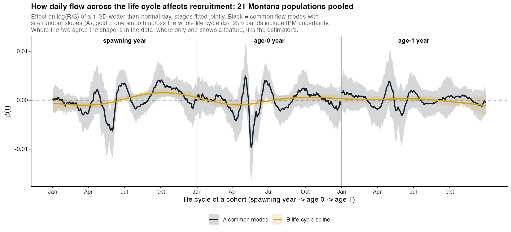
21 populations, 666 population-years. The two estimators agree with correlation 0.40 over the life cycle; the smooth curve used 8.4 effective degrees of freedom. Where only one of them shows a feature, it belongs to that estimator.
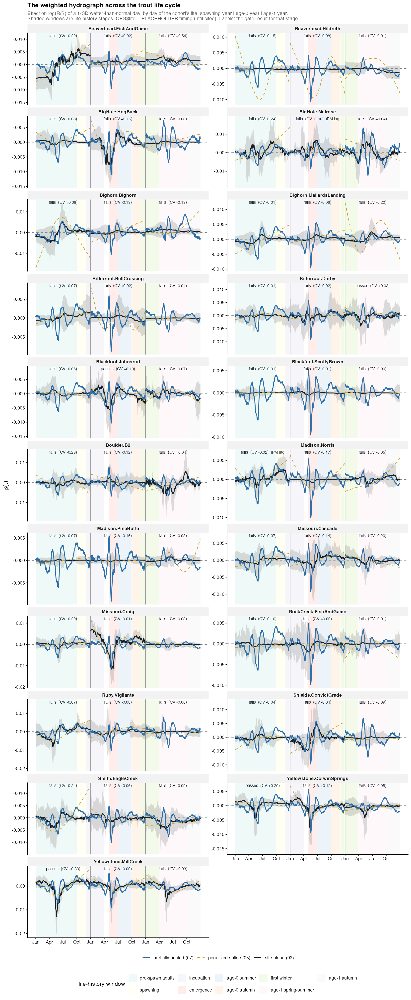
| window | model | effect | lo 95 | hi 95 | P(direction) |
|---|---|---|---|---|---|
| pre-spawn adults | A | -0.07 | -0.15 | 0.02 | 0.94 |
| pre-spawn adults | B | -0.03 | -0.10 | 0.04 | 0.76 |
| spawning | A | 0.11 | 0.03 | 0.18 | 1.00 |
| spawning | B | 0.06 | 0.03 | 0.09 | 1.00 |
| incubation | A | -0.01 | -0.10 | 0.09 | 0.56 |
| incubation | B | 0.00 | -0.06 | 0.05 | 0.52 |
| emergence | A | -0.06 | -0.16 | 0.05 | 0.86 |
| emergence | B | -0.04 | -0.08 | 0.00 | 0.96 |
| age-0 summer | A | 0.01 | -0.09 | 0.12 | 0.58 |
| age-0 summer | B | 0.02 | -0.02 | 0.07 | 0.84 |
| age-0 autumn | A | 0.03 | -0.05 | 0.12 | 0.79 |
| age-0 autumn | B | 0.02 | -0.01 | 0.05 | 0.91 |
| first winter | A | 0.00 | -0.09 | 0.09 | 0.50 |
| first winter | B | 0.02 | -0.04 | 0.07 | 0.74 |
| age-1 spring-summer | A | 0.01 | -0.10 | 0.12 | 0.54 |
| age-1 spring-summer | B | 0.02 | -0.04 | 0.08 | 0.72 |
| age-1 autumn | A | 0.01 | -0.08 | 0.10 | 0.58 |
| age-1 autumn | B | -0.04 | -0.11 | 0.02 | 0.89 |
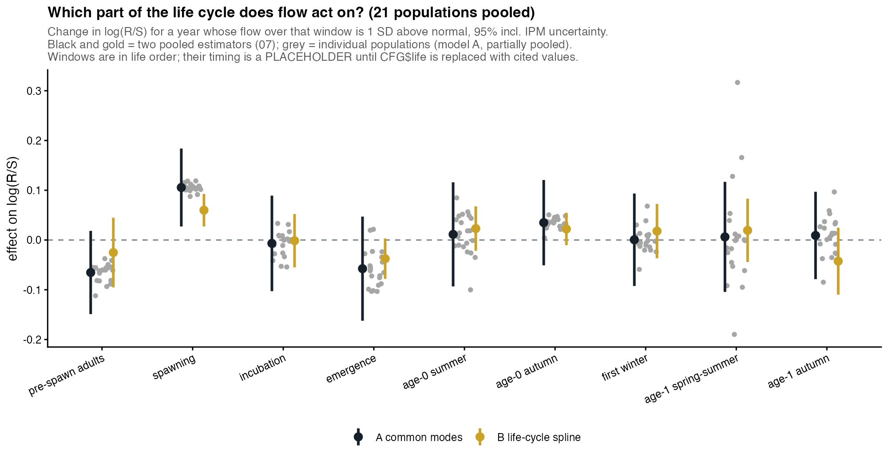
Window dates are provisional until replaced with cited values.
The pre-registered, low-resolution version: four calendar seasons in each of the three hydrograph years, pooled with a random slope per population.
| stage | season | effect | lo 95 | hi 95 | P(direction) |
|---|---|---|---|---|---|
| spawning year | winter | -0.05 | -0.13 | 0.04 | 0.87 |
| spawning year | runoff | -0.11 | -0.20 | -0.02 | 0.99 |
| spawning year | summer | 0.10 | 0.00 | 0.20 | 0.98 |
| spawning year | autumn | 0.14 | 0.03 | 0.24 | 0.99 |
| age-0 year | winter | -0.03 | -0.13 | 0.06 | 0.73 |
| age-0 year | runoff | -0.13 | -0.23 | -0.04 | 1.00 |
| age-0 year | summer | 0.08 | -0.02 | 0.18 | 0.93 |
| age-0 year | autumn | 0.08 | -0.04 | 0.19 | 0.90 |
| age-1 year | winter | -0.03 | -0.12 | 0.07 | 0.71 |
| age-1 year | runoff | -0.01 | -0.11 | 0.09 | 0.59 |
| age-1 year | summer | 0.01 | -0.08 | 0.10 | 0.57 |
| age-1 year | autumn | 0.00 | -0.11 | 0.12 | 0.52 |
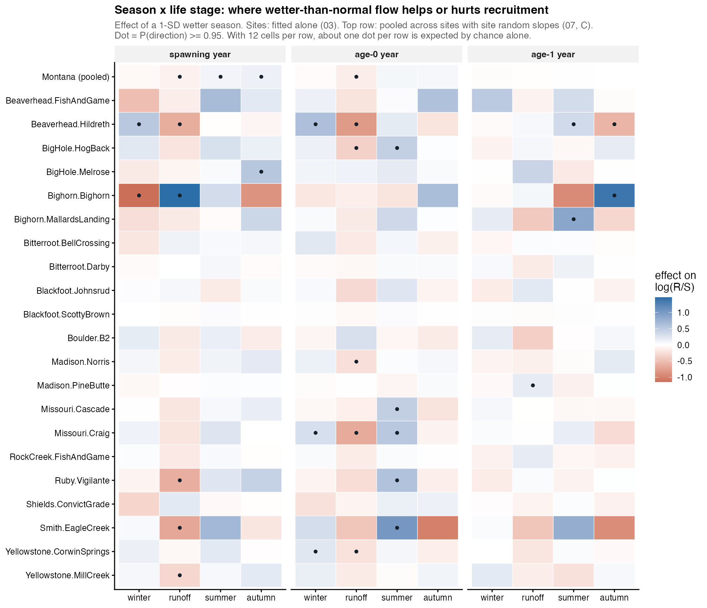
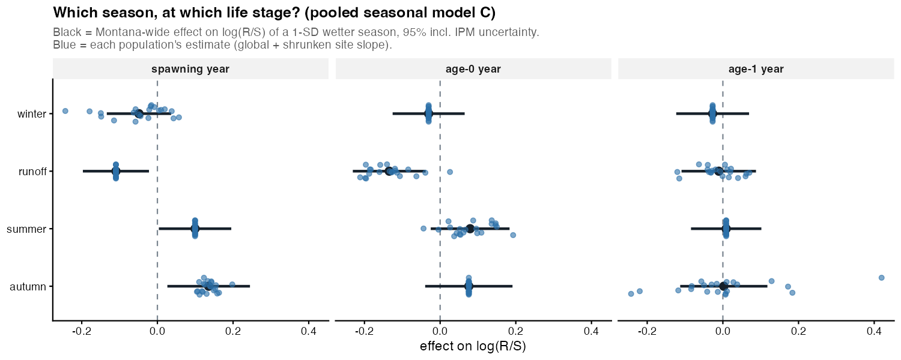
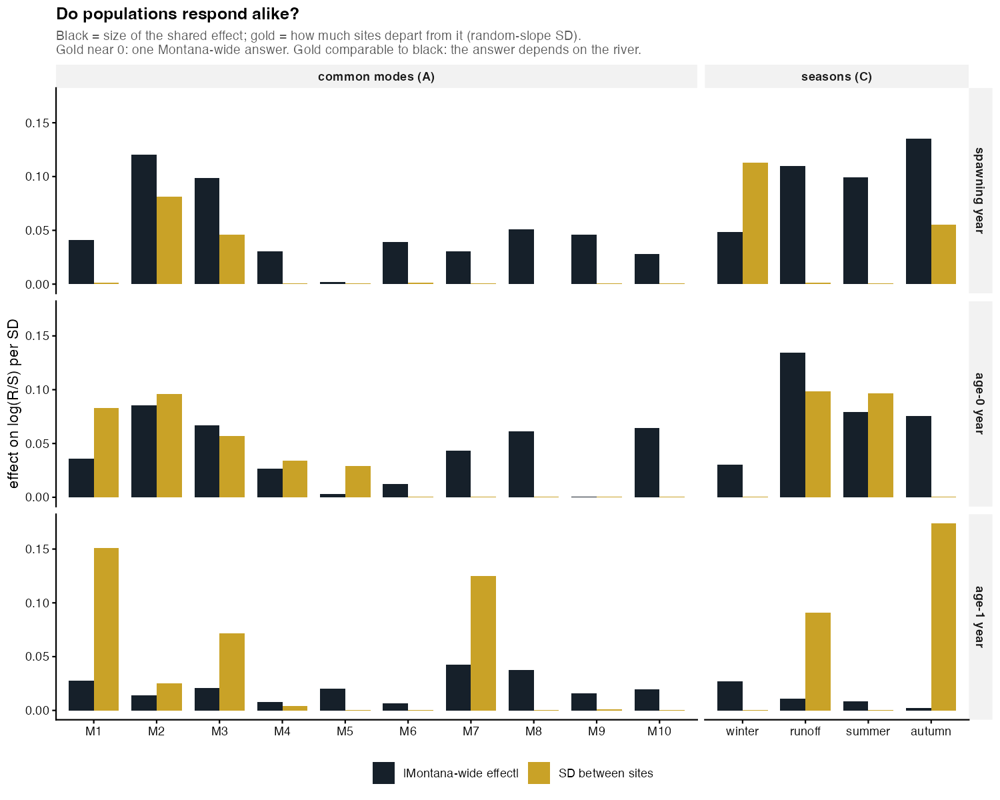
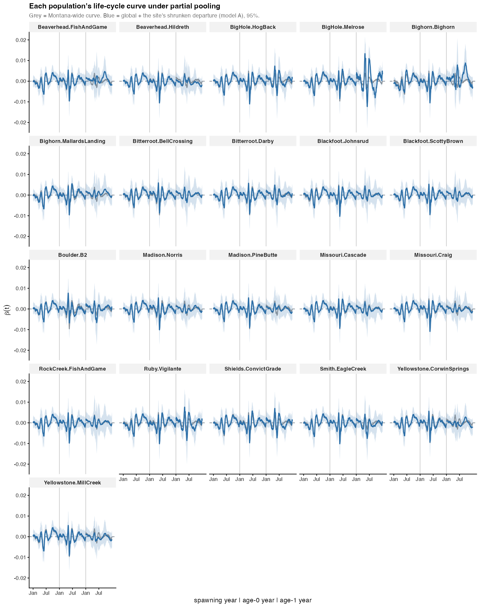
Where the gold bar is near zero, one Montana-wide answer describes every population. Where it is comparable to the black bar, the answer depends on the river, and the natural next question is which rivers.
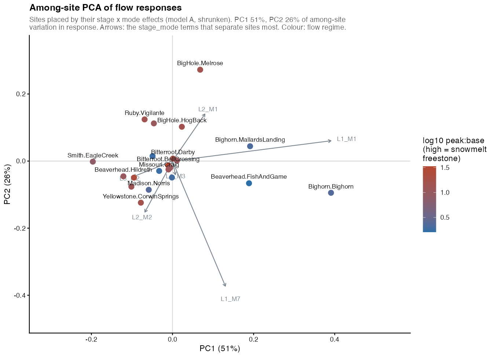
The first two axes hold 51% and 26% of the among-population variation in response. With this many populations, read clusters as hypotheses to test, not results.
Each river’s own flow modes are the right description of that river, but they are different shapes at different sites, so their coefficients cannot be compared or pooled. One analysis over every river’s standardized hydrographs gives modes all populations share; the cost is that some rivers are described less well by them, and the second figure says how much.
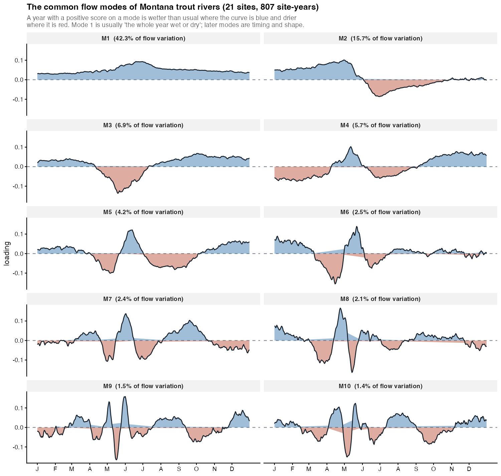
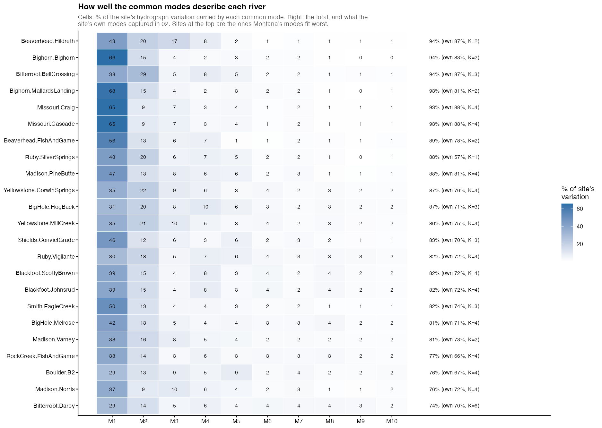
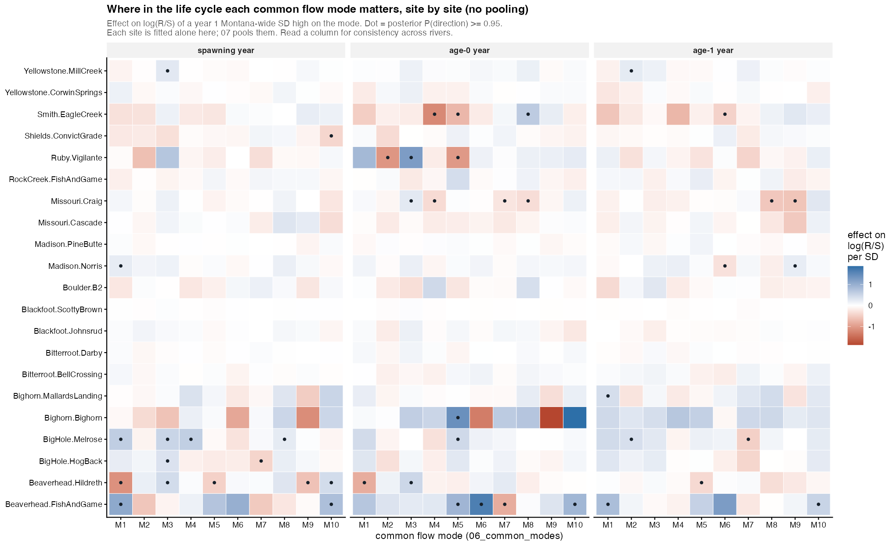
Folds hold out the same block of calendar years at every population at once, so a shared wet or dry year cannot sit in training at one river and in test at another.
| model | R2 (within-population) | gain over site + stock |
|---|---|---|
| null (site + stock) | 0.011 | 0.000 |
| A0 common modes, global | 0.004 | -0.007 |
| A common modes + site slopes | -0.009 | -0.020 |
| B life-cycle spline | 0.008 | -0.003 |
| C season x stage + site slopes | 0.023 | 0.012 |
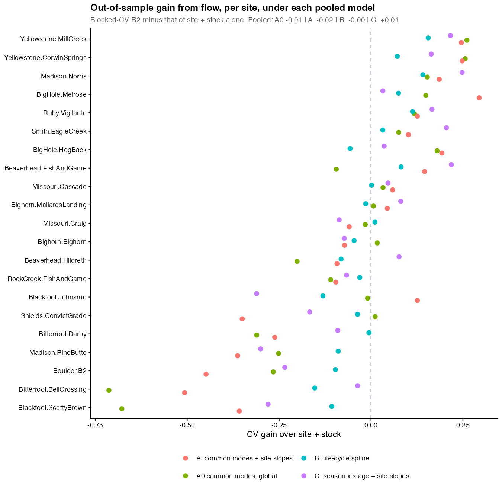
| site | IPM lag | best stage (lag) | its CV gain | stages that pass | agree |
|---|---|---|---|---|---|
| Beaverhead.FishAndGame | NA | 1 | 0.54 | NA | |
| Beaverhead.Hildreth | NA | 1 | -0.01 | NA | |
| BigHole.HogBack | NA | 2 | 0.16 | NA | |
| BigHole.Melrose | 2 | 1 | 0.04 | FALSE | |
| Bighorn.Bighorn | NA | 3 | 0.08 | NA | |
| Bighorn.MallardsLanding | NA | 3 | -0.01 | NA | |
| Bitterroot.BellCrossing | NA | 2 | 0.02 | NA | |
| Bitterroot.Darby | NA | 1 | 0.03 | age-1 year | NA |
| Blackfoot.Johnsrud | NA | 2 | 0.19 | age-0 year | NA |
| Blackfoot.ScottyBrown | NA | 1 | 0.00 | NA | |
| Boulder.B2 | NA | 1 | 0.04 | NA | |
| Madison.Norris | 3 | 3 | -0.02 | TRUE | |
| Madison.PineButte | NA | 3 | -0.07 | NA | |
| Missouri.Cascade | NA | 3 | -0.07 | NA | |
| Missouri.Craig | NA | 2 | -0.01 | NA | |
| RockCreek.FishAndGame | NA | 2 | 0.00 | NA | |
| Ruby.Vigilante | NA | 1 | -0.06 | NA | |
| Shields.ConvictGrade | NA | 3 | -0.04 | NA | |
| Smith.EagleCreek | NA | 2 | -0.06 | NA | |
| Yellowstone.CorwinSprings | NA | 3 | 0.20 | spawning year | NA |
| Yellowstone.MillCreek | NA | 3 | 0.33 | spawning year | NA |
Three questions this page is for. They are claims to be argued from the sections above, not read off a single table:
Every number quoted in the manuscript is in
output/tables/derived_stats.csv, regenerated on each run so
the text and the figures cannot drift apart.